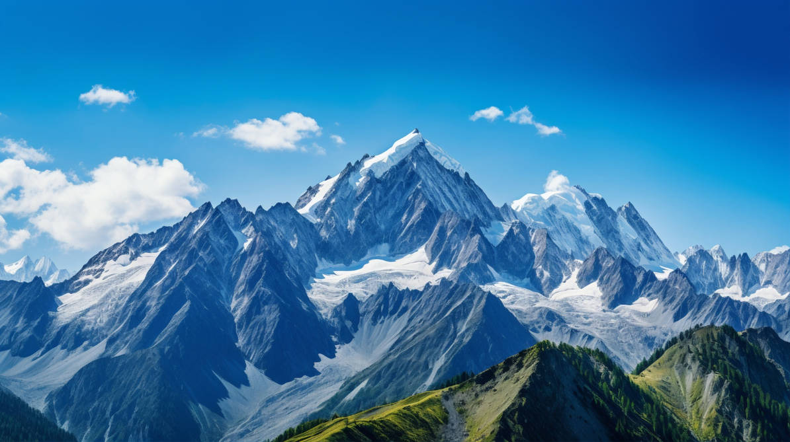
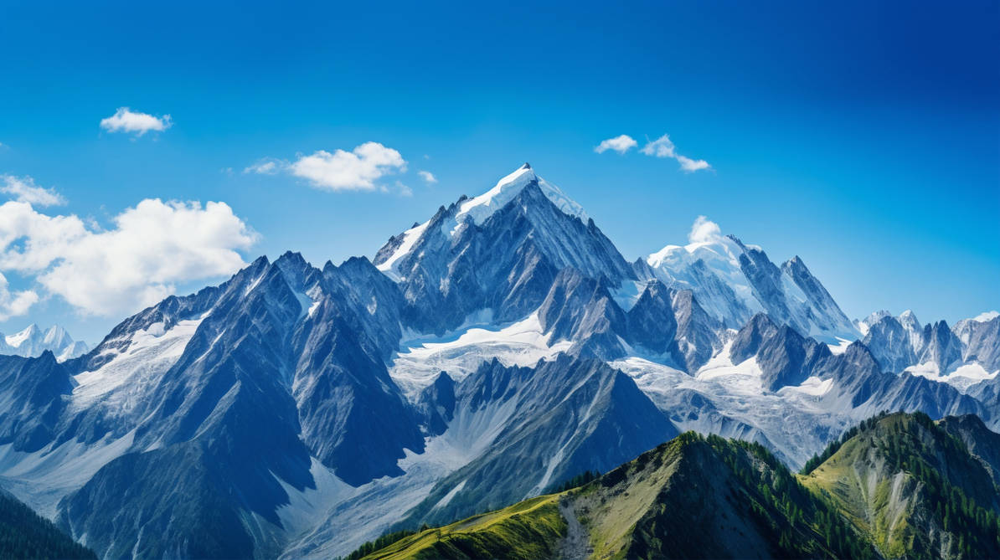

Why Visit Kashmir?
Introduction
Kashmir, a region of breathtaking natural beauty in the northern part of the Indian subcontinent, is a popular tourist destination. Renowned for its snow-capped mountains, lush valleys, and serene lakes, Kashmir attracts visitors from around the world. However, the region's tourism industry has been affected by political tensions and security concerns. Despite challenges, efforts are made to promote Kashmir as a safe and enchanting destination for travelers seeking adventure and cultural experiences.
Activities to do in Kashmir
 


- Visit popular cities and the classic places like Srinagar, Sonamarg, Gulmarg, Pahalgam
- Visit Leh, Ladakh
- Famous lakes and gardens
- Adventures like para-gliding and gondola
- Explore beautiful peaks and valleys
Tours
Main tours
- Gulmarg, Sonamarg, Pahalgam tour: $5,000
- Classic city tour: $3,512
- Kashmir and Leh tour: $5,400
Custom tours

Visit places of your choice, take your time.
No rush, just good vibes
Design your tour,
call us at - 37283******